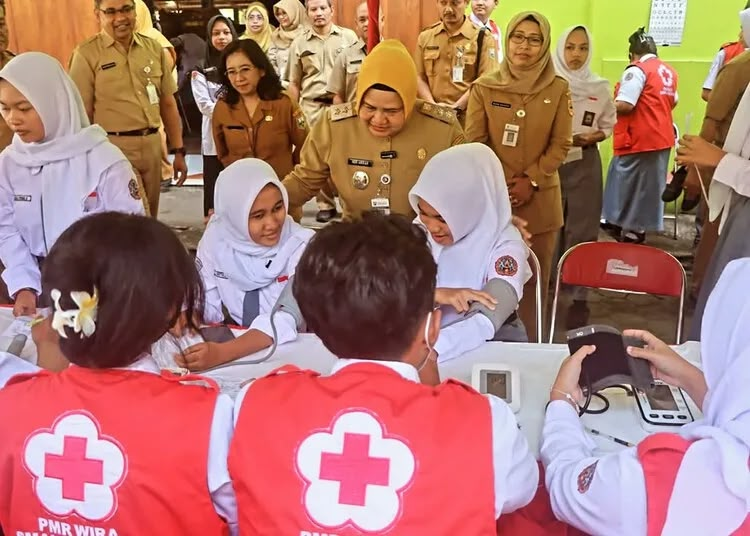

|
Website GiselyMe.
|
|
| Beranda | Tentang Saya | Sekolahku | Syair Lagu | |
Tes Kesehatan SMK Negeri 1 TangerangSenin, 21 September 2026 SMKN 1 Tangerang bekerja sama dengan Puskesmas Sukasari menggelar kegiatan Cek Kesehatan Gratis (CKG) di lingkungan sekolah pada Rabu (23/9/2026). Kegiatan ini ditujukan bagi seluruh siswa kelas X, guru, serta tenaga kependidikan. Pemeriksaan kesehatan ini dilakukan sebagai langkah deteksi dini dan pemantauan kondisi fisik warga sekolah. Adapun rangkaian cek kesehatan meliputi pemeriksaan antropometri (tinggi dan berat badan), cek penunjang, hingga pemeriksaan kesehatan berkala lainnya untuk memastikan kondisi tubuh tetap prima dalam mendukung aktivitas belajar mengajar.  |
Tautan eksternal |
| © Quinsha Giselyi, 2026. | |